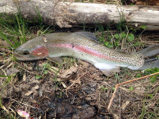
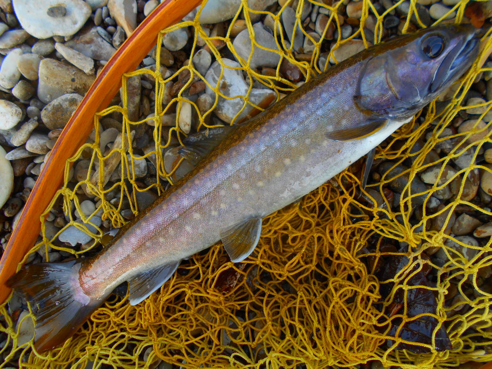

山女 ２６センチ ２０１３年８月１０日 SRB
岩魚 ２５センチ ２０１５年８月２日 MSTR
岩魚 尺 ２０１６年１０月２８日 CHR TNTK
岩魚 ２５センチ ２０１７年７月１５日 KKKC
雨鱒 ５６センチ ２０１５年３月２８日 KHR URM 上のボサ
虹鱒 ４９センチ ２０１４年５月１７日 SHOR_DM２本目橋の車止
姫鱒 ３５センチ ２０１４年１０月３０日 KSRKO WKT
桜鱒 ５４センチ ２０１５年５月１０日 KSR STGNROADHASI
鮭 ７８センチ ２０１４年８月３０日 ONBT

